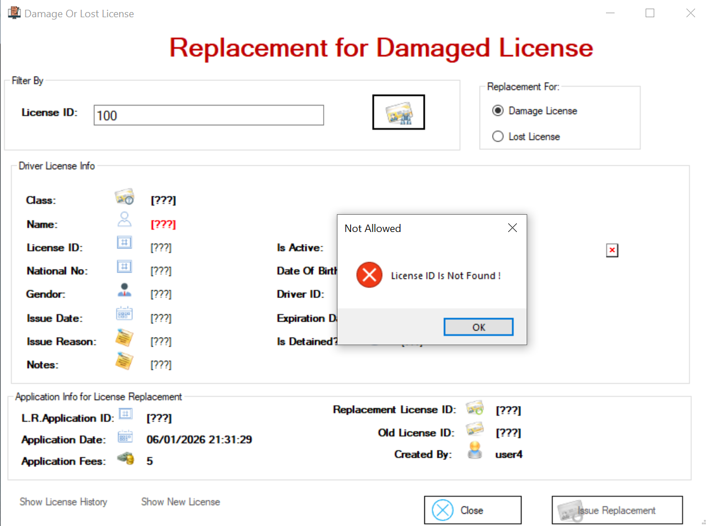
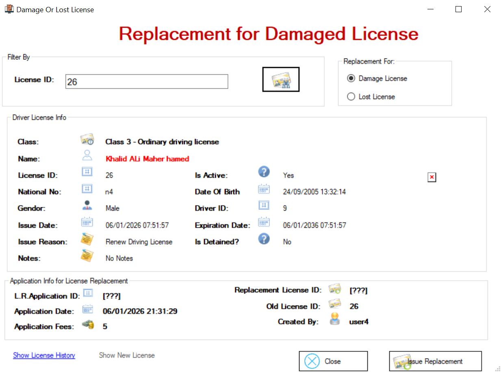
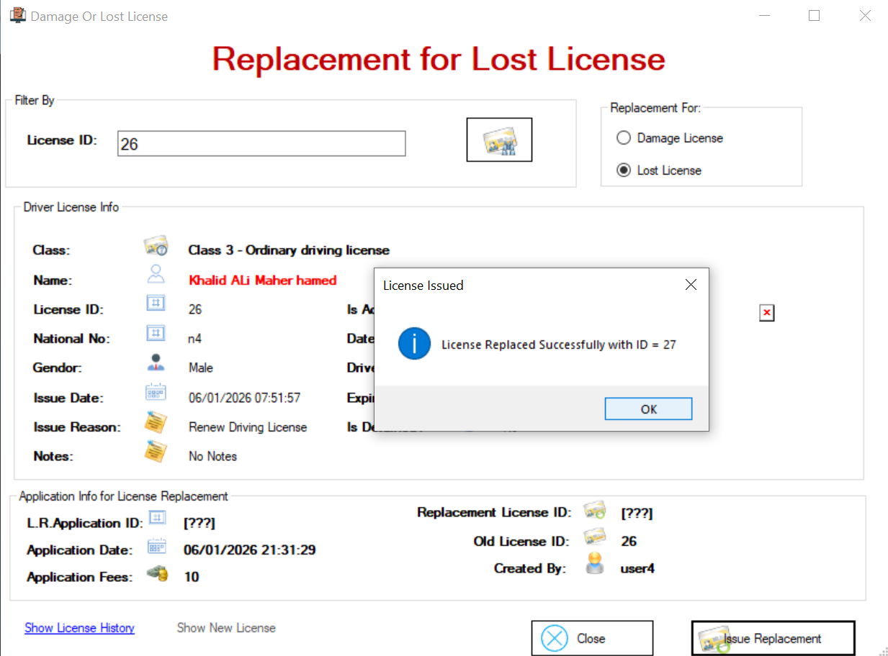
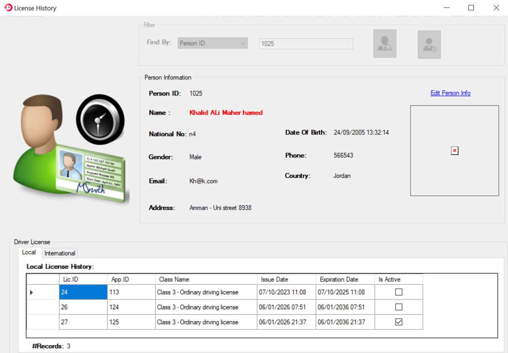
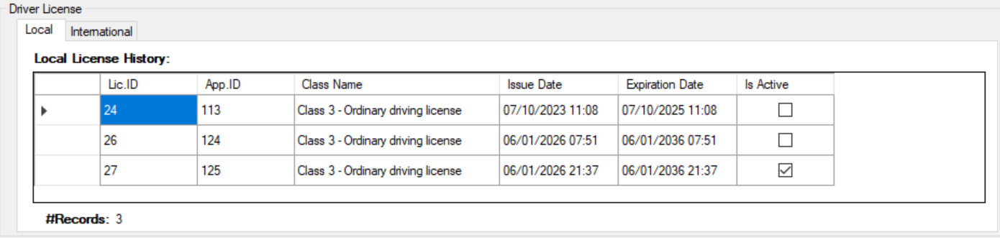

Si le permis est expiré et que nous souhaitons le renouveler, nous nous rendons sur le site Replacement For Lost Or Damage.
Sur cet écran apparaît l'option «Replacement For Lost or Damaged License». Nous pouvons saisir l'identifiant de la licence en cas de perte ou de dommage, nous pouvons la remplacer par une autre

Sur cet écran, lorsqu'on saisit un identifiant de licence introuvable, le système refuse de le remplacer et le bouton reste désactivé.

Sur cet écran, il apparaît que lorsque nous saisissons un identifiant de licence inactif, le système refuse de le remplacer et le bouton reste désactivé.

Sur cet écran, lorsque nous saisissons un identifiant de licence trouvé et actif, et que nous choisissons « Damage License », le système accepte de la remplacer, le bouton devient actif et les frais s'élèvent à 5 $.

Sur cet écran, lorsque nous saisissons un identifiant de licence trouvé et actif et que nous choisissons « Lost License », le système accepte de la remplacer, le bouton devient actif et les frais s'élèvent à 10 $.

L'écran ci-dessous indique que l'opération de remplacement a été effectuée avec succès.

Sur cet écran, la nouvelle licence, apparaît et est active

Cet écran affiche l'historique des licences : toutes les licences sont visibles, une licence arrive à expiration, une autre est déclarée comme perdue et la nouvelle licence est active.

